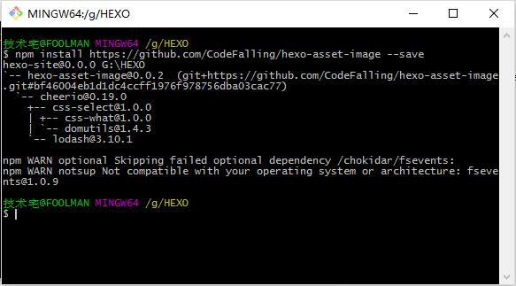
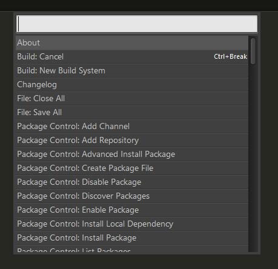

喜欢键盘的敲击声，每一下都掷地有声，正中了那句话，念念不忘，必有回响。
Sublime Text 3安装
Sublime Text 3安装
下载地址：
序列号：
01
—– BEGIN LICENSE —–
Andrew Weber
Single User License
EA7E-855605
813A03DD 5E4AD9E6 6C0EEB94 BC99798F
942194A6 02396E98 E62C9979 4BB979FE
91424C9D A45400BF F6747D88 2FB88078
90F5CC94 1CDC92DC 8457107A F151657B
1D22E383 A997F016 42397640 33F41CFC
E1D0AE85 A0BBD039 0E9C8D55 E1B89D5D
5CDB7036 E56DE1C0 EFCC0840 650CD3A6
B98FC99C 8FAC73EE D2B95564 DF450523
—— END LICENSE ——
02
—– BEGIN LICENSE —–
K-20
Single User License
EA7E-940129
3A099EC1 C0B5C7C5 33EBF0CF BE82FE3B
EAC2164A 4F8EC954 4E87F1E5 7E4E85D6
C5605DE6 DAB003B4 D60CA4D0 77CB1533
3C47F579 FB3E8476 EB3AA9A7 68C43CD9
8C60B563 80FE367D 8CAD14B3 54FB7A9F
4123FFC4 D63312BA 141AF702 F6BBA254
B094B9C0 FAA4B04C 06CC9AFC FD412671
82E3AEE0 0F0FAAA7 8FA773C9 383A9E18
—— END LICENSE ——
03
—– BEGIN LICENSE —–
J2TeaM
2 User License
EA7E-940282
45CB0D8F 09100037 7D1056EB A1DDC1A2
39C102C5 DF8D0BF0 FC3B1A94 4F2892B4
0AEE61BA 65758D3B 2EED551F A3E3478C
C1C0E04E CA4E4541 1FC1A2C1 3F5FB6DB
CFDA1551 51B05B5D 2D3C8CFE FA8B4285
051750E3 22D1422A 7AE3A8A1 3B4188AC
346372DA 37AA8ABA 6EB30E41 781BC81F
B5CA66E3 A09DBD3A 3FE85BBD 69893DBD
—— END LICENSE ——
上面这3个用哪个都可以，截止2016年3月31日，这三个都还可以用，再往后就不知道了。
安装MARKDOWN支持插件
默认Sublime Text是不支持Markdown语法高亮和预览的，对于万能的Sublime Text，这点事情一定有插件能解决。
Sublime Text 3 安装Package Control，挺不能理解为什么不默认含在app里
快捷键ctrl+`或者 View > Show Console 菜单打开控制台
1 | import urllib.request,os; |
上面这几行是需要在控制台里一行一行输入的，Sublime官方提供过了一个一行的命令行方式，地址见这里：https://packagecontrol.io/installation，里面对版本3和2有不同的命令，再次不多说了。
然后输入之后，我这里遇到了错误。
reloading plugin Package Control.1_reloader
reloading plugin Package Control.2_bootstrap
reloading plugin Package Control.Package Control
reloading Packages/Package Control/Package Control.sublime-settings
reloading Packages/User/Package Control.sublime-settings
reloading plugin 0_package_control_loader.00-package_control
Package Control: Attempting to use Urllib downloader due to WinINet error: Error submitting usage information. Connection refused (errno 12029) during HTTP write phase of downloading https://packagecontrol.io/submit?operation=install&sublime_version=3083&package_control_version=3.1.2&version=3.1.2&sublime_platform=windows&package=Package+Control.
Package Control: Error submitting usage information. HTTP exception InvalidCertificateException (Host packagecontrol.io returned an invalid certificate ([SSL: CERTIFICATE_VERIFY_FAILED] certificate verify failed (_ssl.c:550))) downloading https://packagecontrol.io/submit?operation=install&sublime_version=3083&package_control_version=3.1.2&version=3.1.2&sublime_platform=windows&package=Package+Control.
Package Control: Installing 1 missing dependency
Package Control: Error downloading channel. HTTP exception InvalidCertificateException (Host packagecontrol.io returned an invalid certificate ([SSL: CERTIFICATE_VERIFY_FAILED] certificate verify failed (_ssl.c:550))) downloading https://packagecontrol.io/channel_v3.json.
Package Control: The dependency specified, bz2, is not available
Package Control: Error downloading channel. HTTP exception InvalidCertificateException (Host packagecontrol.io returned an invalid certificate ([SSL: CERTIFICATE_VERIFY_FAILED] certificate verify failed (_ssl.c:550))) downloading https://packagecontrol.io/channel_v3.json.
Package Control: Error downloading channel. HTTP exception InvalidCertificateException (Host packagecontrol.io returned an invalid certificate ([SSL: CERTIFICATE_VERIFY_FAILED] certificate verify failed (_ssl.c:550))) downloading https://packagecontrol.io/channel_v3.json.
Package Control: No updated packages
看来是安装失败了，我这里的网络条件不是很好，挂着代理更新也失败了。看来只能换一种方式了。
安好重启后，用万能快捷键Ctrl+Shift+P，调出菜单Package Control Install，再输入Markdown关键字，就能发现很多Markdown插件。
经过反复尝试，还是一个叫Markdown Editing的比较好使，直接使编辑器在编辑时所见即所得，只是这个默认灰色的颜色…
Sublime Text，有2或者3两个版本，我用的3。
Cmd Markdown
截图见下面
如何舒适的插入图片


在线Markdown工具
https://stackedit.io
https://www.zybuluo.com/mdeditor